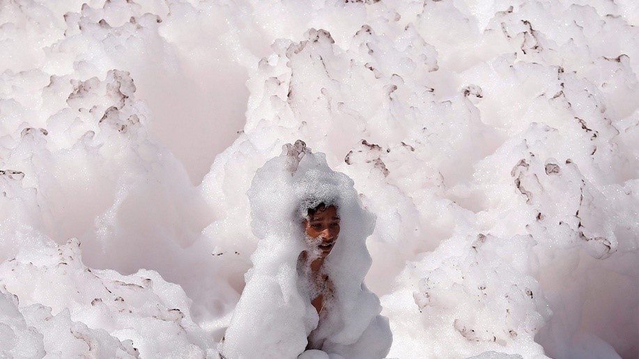
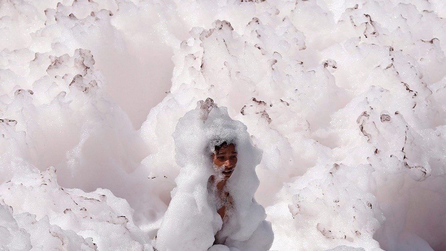

ผลกระทบต่อมนุษย์
น้ำเสีย หมายถึงน้ำที่มีสิ่งเจือปนต่าง ๆ มากมาย จนกระทั่งกลายเป็นน้ำที่ไม่เป็นที่ต้องการ และน่ารังเกียจของคนทั่วไป ไม่เหมาะสมสำหรับใช้ประโยชน์อีกต่อไป หรือถ้าปล่อยลงสู่ลำน้ำธรรมชาติก็จะทำให้คุณภาพน้ำของธรรมชาติเสียหายได้ ปัญหาน้ำเน่าเสียหรือการเกิดมลพิษทางน้ำ ส่วนใหญ่เกิดจากการกระทำของมนุษย์ ดังนั้นการถ่ายทอดความรู้ให้กับเด็ก เยาวชน รวมทั้งพ่อแม่ผู้ปกครองและประชาชนทั่วไป ให้ตระหนักถึงผลเสียและรับรู้การป้องกันปัญหาน้ำเน่าเสียอย่างถูกต้อง เป็นการแก้ไขปัญหามลพิษทางน้ำอย่างถูกวิธีและได้ผลอย่างยั่งยืนน้ำเสียที่ถูกปล่อยมาจากโรงงานโดยยังมีสารพิษปนอยู่ในน้ำ ส่งผลให้เกิดน้ำเสีย เป็นแหล่งแพร่ระบาดของเชื้อโรค เช่น อหิวาตกโรค บิด และท้องเสียได้
ตัวอย่างข่าวผลกระทบของมลพิษต่อมนุษย์
ฟองมลพิษปกคลุมแม่น้ำยมนา ในกรุงนิวเดลี
ภาพที่สวยงามของแม่น้ำศักดิ์สิทธิ์ในประเทศอินเดีย ระหว่างเทศกาลนวราตรี แต่เบื้องหลังคือมลพิษทางน้ำ ระหว่างวันที่ 28 กันยายน - 8 ตุลาคม 2562 เป็นช่วงเทศกาลสำคัญของศาสนาฮินดูในอินเดีย คือเทศกาลนวราตรี ผู้คนต่างลงล้างตัวในแม่น้ำศักดิ์สิทธิ์ ยมนา ระหว่างเทศกาลเฉลิมฉลอง แต่แม่น้ำนั้นปกคลุมไปด้วยฟองมลพิษ ที่ส่งกลิ่นเหม็นไปทั่วบริเวณ จนทำให้เกิดความกังวลเกี่ยวกับภาวะมลพิษทางน้ำที่อาจก่อผลกระทบต่อสิ่งแวดล้อมบางส่วนของแม่น้ำถูกทางการประกาศให้เป็น “เดดโซน” (Dead Zone) คือเป็นเขตอันตรายเนื่องจากระดับมลพิษนั้นสูงมากจนเป็นอันตรายต่อสิ่งมีชีวิตในแม่น้ำ ยมนานับเป็นหนึ่งในแม่น้ำศักดิ์สิทธิ์ของอินเดีย และเป็นหนึ่งในแม่น้ำที่มีมลภาวะทางน้ำสูงที่สุดของประเทศด้วย จากของเสียที่โรงงานในพื้นที่ปล่อยลงสู่แม่น้ำกว่า 600 ล้านแกลลอนทุกๆปี

 

กลับสู่มลพิษทางน้ำ